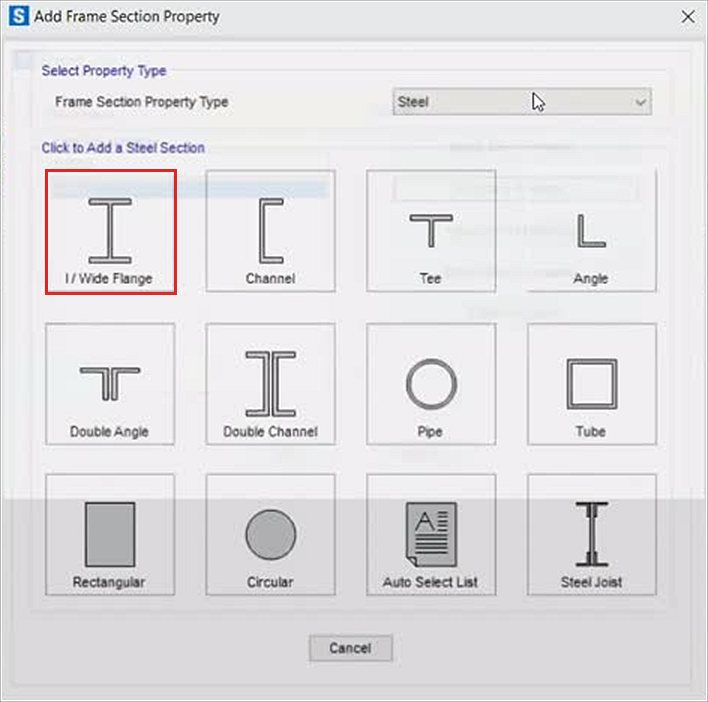
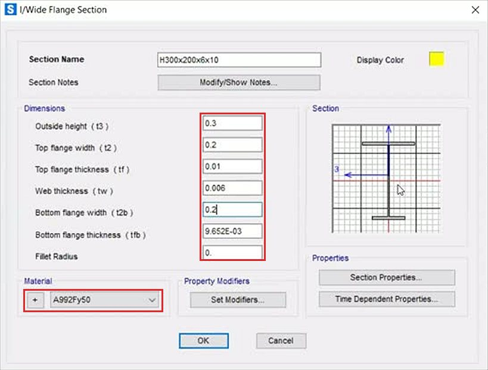

Bài 2.3. Tiết diện I tổ hợp, ống, thép tròn Built-up I, pipe and round bar sections
Tiết diện I tổ hợp hàn khai báo bằng bốn kích thước và đặt tên theo quy ước H{h}x{bf}x{tw}x{tf}; ống, thép tròn và thép hình nguội có hộp thoại riêng.
- Khai báo tiết diện I tổ hợp, ống, thép tròn; đọc đúng tên tiết diện.
- Tự tính $A$, $I_{33}$ để đối chiếu với Section Properties của SAP2000.
1. Tình huống
Kèo nhà máy DNP dùng H500×250×8×12; cột đầu hồi, cột sườn tường nhà xưởng Hòa Bình dùng H250×200×5×6; thanh chống là ống D114×4, giằng là thép tròn D20. Mỗi loại khai báo ở một hộp thoại khác nhau, và chỉ cần nhầm $t_w$ với $t_f$ là độ cứng sai hàng chục phần trăm.
2. Nội dung chính
Tiết diện
Tiết diện I tổ hợp
Define → Section Properties → Frame Sections → Add New Property → Steel → I/Wide Flange:
- Kích thước: Outside height $h$, Top flange width/thickness, Web thickness, Bottom flange width/thickness, Fillet radius = 0 (tiết diện hàn).
- Đặt tên theo quy ước
H{h}x{bf}x{tw}x{tf}, ví dụH500x250x8x12. Với cánh không đối xứng thì ghi cả hai cánh.
Video Buổi 02 khai báo các tiết diện như H250x200x5x6 (cột đầu hồi, cột sườn tường) theo cách này.
Ống, thép tròn, thép hình nguội
- Ống (Pipe), hộp (Tube): Add → Steel → Pipe / Tube. Ví dụ thanh chống
D114x4. - Thép tròn: Add → Other → General hoặc Steel → Solid Circle. Ví dụ giằng
D20. - Thép hình nguội C, Z: Add → Cold Formed → C (Lipped Channel), Z. SAP2000 thiết kế theo AISI. Với nhánh TCVN, xà gồ thường được tính bằng bảng tính riêng (Chương 6), không đưa vào mô hình tổng.
3. Ví dụ tính toán
Tính $A$, $I_{33}$ và khối lượng 1 m dài của kèo H500×250×8×12 để so với giá trị SAP2000 hiển thị ở nút Section Properties.
Lời giải
- Chiều cao bụng $h_w = 500 - 2\times12 = 476$ mm.
- $A = 2\times250\times12 + 8\times476 = 9808$ mm².
- $I_{33} = \dfrac{250\times500^3 - 242\times476^3}{12} = 42\,919$ cm⁴.
- Khối lượng: $9808\times10^{-6}\times7850 = 77{,}0$ kg/m.
4. Thực hành SAP2000
- Define → Section Properties → Frame Sections → Add New Property → Steel → I/Wide Flange.
- Nhập $h$ = 500, bề rộng/dày cánh trên 250/12, dày bụng 8, cánh dưới 250/12, Fillet radius = 0; chọn vật liệu.
- Bấm Section Properties và so với Ví dụ 2.1.
- Define
- Section Properties
- Frame Sections
- Add New Property
- Frame Section Property Type = Steel
- I / Wide Flange

- Define
- Section Properties
- Frame Sections
- Add New Property
- I / Wide Flange
- nhập t3, t2, tf, tw, t2b, tfb
- Material

5. Lỗi thường gặp
- Nhập lẫn $t_w$ và $t_f$ (tên H500x250x8x12: 8 là bụng, 12 là cánh).
- Để Fillet radius khác 0 cho tiết diện hàn: diện tích và $I$ lớn hơn thực tế.
6. Luyện tập
Trong tên tiết diện H500x250x8x12, chiều dày bụng là bao nhiêu?
Gợi ý
Quy ước H{h}x{bf}x{tw}x{tf}.
Lời giải
Thứ tự là $h$, $b_f$, $t_w$, $t_f$ → $t_w = 8$ mm.
Tính diện tích tiết diện H500×250×8×12.
Gợi ý
$A = 2b_ft_f + t_w(h - 2t_f)$.
Lời giải
$A = 2\times250\times12 + 8\times476 = 9808$ mm².
Tính $I_{33}$ của cột sườn tường H250×200×5×6 để kiểm tra giá trị SAP2000 hiển thị.
Gợi ý
$I_{33} = [b_fh^3 - (b_f - t_w)h_w^3]/12$, $h_w = h - 2t_f$.
Lời giải
$h_w = 238$ mm; $I_{33} = (200\times250^3 - 195\times238^3)/12 = 4135$ cm⁴.
- Tiết diện hàn: Fillet radius = 0; tên
H{h}x{bf}x{tw}x{tf}. - Ống, hộp: Steel → Pipe/Tube; thép tròn: Solid Circle hoặc General; thép hình nguội: Cold Formed.
- Luôn đối chiếu $A$, $I_{33}$ bằng tay với Section Properties.